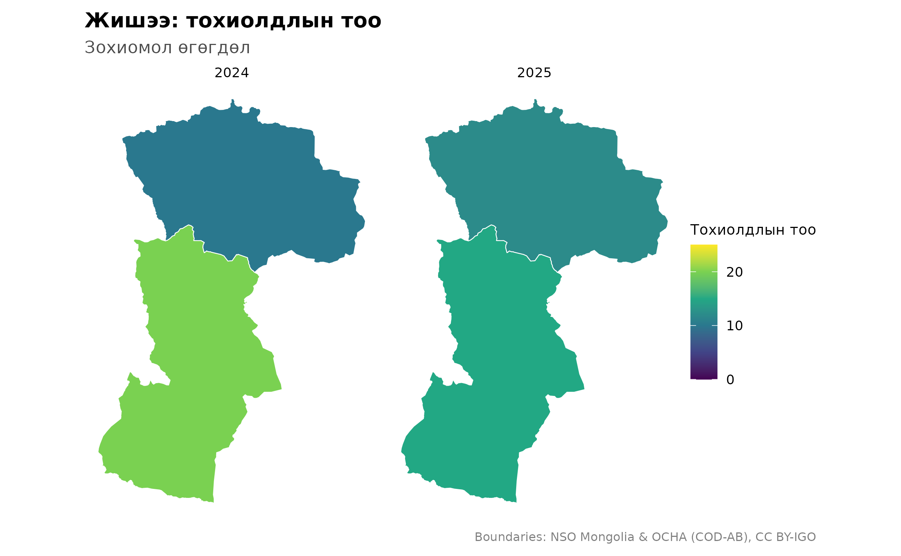
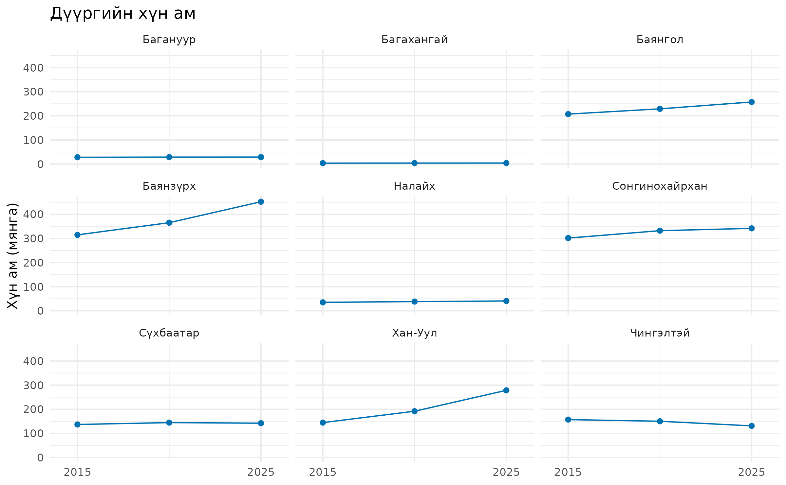
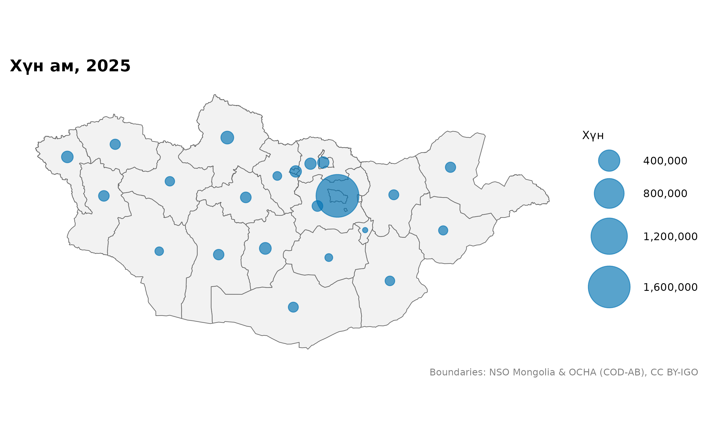

Холболтыг шалгах, зураг харьцуулах
Source:vignettes/articles/audited-workflows.Rmd
audited-workflows.RmdЭнэ гарын авлагыг Өгөгдлөө газрын зурагтай холбох-ын дараа уншаарай. Тохирсон нэр, кодыг шалгах, онуудыг ижил хуваариар харьцуулах, жижиг газрыг томруулж харах жишээтэй. Бүх өгөгдөл багцад бий. Томруулсан зурагт patchwork багц хэрэгтэй.
library(mongolmaps)
options(mongolmaps.lang = "mn")
library(ggplot2)Мөр бүрийг хэрхэн холбосныг шалгах
Боломжтой бол нэрийн оронд код ашиглана. Нэр давхардвал нэг газар
нутагт within-ээр хязгаарлах эсвэл мөр бүрийн харьяалах
нэгжийг by_parent-аар өгнө.
district <- mn_join(
data.frame(place = "Bayangol", cases = 12),
"place", level = "soum", within = "Ulaanbaatar"
)
knitr::kable(mn_join_audit(district)[c("row", "x", "pcode", "status", "action")])| row | x | pcode | status | action |
|---|---|---|---|---|
| 1 | Bayangol | MN1107 | exact | joined |
mn_join_audit() анхны мөр бүрийн үр дүнг харуулна:
холбосон уу, өөр түвшин тул хассан уу, эсвэл тохироогүй юу. Объектыг
дахин үүсгэхэд нэмэлт мэдээлэл алдагдаж болох тул шаардлагатай бол
шалгалтын хүснэгтийг тусад нь хадгална.
mn_match(details = TRUE) боломжит тохирлууд, бичлэгийн
ялгааг харуулна. Бичлэгийн ялгаа бага байх нь зөв тохирсон магадлал
биш.
Тодорхойгүй, давхардсан мөр дээр зогсоох
strict = TRUE нь шийдэгдээгүй нэр, ойролцоо бичлэгийн
тохирол, хил зааггүй нэгж, давхардсан газар/бүлгийн хослол дээр зогсоно.
strata-д тусдаа ажиглалтыг ялгах багануудыг өгнө.
observations <- data.frame(
place = c("Uvs", "Uvs", "Khovd", "Khovd"),
Year = c(2024, 2025, 2024, 2025),
cases = c(10, 12, 20, 15)
)
joined <- mn_join(observations, "place", level = "aimag",
strata = "Year", strict = TRUE, fuzzy = FALSE)
knitr::kable(mn_join_audit(joined)[c("row", "status", "action")])| row | status | action |
|---|---|---|
| 1 | exact | joined |
| 2 | exact | joined |
| 3 | exact | joined |
| 4 | exact | joined |
Эндэх тоонууд нь шалгалтыг үзүүлэх зохиомол өгөгдөл.
Харьцуулахдаа ижил өнгөний хуваарь ашиглах
10 гэсэн утга бүх зурагт ижил өнгөтэй байх ёстой.
limits, breaks-ийг тогтоох эсвэл нэг
хуваарьтай facet хэсгүүд ашиглана. Энд зөвхөн ажиглалттай хоёр аймгийг
харуулсан.
observed <- joined[joined$pcode %in% c("MN84", "MN85"), ]
mn_map(observed, fill = cases, limits = c(0, 25), breaks = c(0, 10, 20),
title = "Жишээ: тохиолдлын тоо") +
facet_wrap(~Year) +
labs(fill = "Тохиолдлын тоо", subtitle = "Зохиомол өгөгдөл")
bins-д заагуудыг тодорхой өгвөл ангиллууд өөрчлөгдөхгүй.
Тэг орчим ялгааг зурахад midpoint = 0 хэрэглэнэ. Тэг,
дутуу, нууцалсан утгыг ялгаж хадгална. Зөвхөн зургаар үзүүлэлтийн
тогтвортой байдлыг дүгнэж болохгүй.
Улаанбаатарын ҮСХ-ны хоёр код
5 нь нийслэлийн бүс, 511 нь аймгийн түвшний
нийслэлийн код. Зарим хүснэгт ижил үзүүлэлтийг аль нэг кодоор өгдөг.
Тэдгээрийг нэг газар гэж үзэхээс өмнө хүснэгтийн тайлбарыг шалгана.
capital_table <- data.frame(
Region = c("5", "511", "5", "511"),
Month = c("July", "July", "August", "August"),
value = c(10, NA, NA, 20)
)
capital <- mn_join(capital_table, "Region", level = "aimag",
strata = "Month", value_cols = "value")
knitr::kable(sf::st_drop_geometry(
capital[capital$pcode == "MN11", c("Month", "value")]
))| Month | value |
|---|---|
| July | 10 |
| August | 20 |
Анхдагч тохиргоо нийслэлийн дутуугүй утгыг авч, хоосон утгыг
бүсийнхээр нөхнө. Зөрүүтэй утга анхааруулга үүсгэнэ.
ub_policy = "error" зөрчил дээр зогсоно,
"prefer_region" бүсийг давуу болгоно, "none"
энэ боловсруулалтыг унтраана. Бүсийн нийт дүнд түүний нэгжүүдийг нэмж
давхар тоолж болохгүй.
Улаанбаатарыг томруулж харуулах
Улсын зурагт жижиг газрууд бараг харагдахгүй.
mn_inset_ub() нь шинжилгээний координатыг өөрчлөхгүйгээр
томруулсан хэсэг нэмнэ.
pop <- mn_example_population[mn_example_population$Year == 2025, ]
aimags <- mn_join(pop, "Region", level = "aimag")
mn_inset_ub(aimags, fill = value, trans = "log10",
title = "Хүн ам, 2025") &
labs(fill = "Хүн")
Хэсгүүд ижил өнгөний хуваарьтай ч газарзүйн масштаб нь өөр.
ub-аар илүү нарийн хотын өгөгдөл өгч болно; хоёр хэсгийн
хэмжих нэгж ижил байх ёстой. Салангид дүүргүүдийг Улаанбаатарын зураг-т харуулсан.
Дүүргийн хүн амын өөрчлөлтийг харьцуулах
Хэсэг бүр нэг дүүргийг харуулна. Графикууд 2015, 2020, 2025 оны ҮСХ-ны бодит ажиглалтыг ашиглана.
district_pop <- mn_join(
mn_example_population, "Region", level = "soum",
within = "Ulaanbaatar", strata = "Year", value_cols = "value"
)
trends <- sf::st_drop_geometry(district_pop)
ggplot(trends, aes(Year, value / 1000, group = pcode)) +
geom_line(colour = "#0072B2") +
geom_point(colour = "#0072B2", size = 1.5) +
facet_wrap(~name, ncol = 3) +
scale_x_continuous(breaks = c(2015, 2025), expand = expansion(mult = 0.15)) +
labs(x = NULL, y = "Хүн ам (мянга)", title = "Дүүргийн хүн ам") +
theme_minimal(base_size = 10)
Бүх хэсэг ижил босоо хуваарьтай тул хүн амын хэмжээг харьцуулж болно.
Газарзүйн ойролцоо байрлалтай зохиомж хийхэд mn_aimag_grid,
mn_ub_grid-ийн мөр, баганын байрлалыг ашиглаж болно.
Хүн амыг тойргоор харуулах
Том талбайтай аймаг хүн цөөн байсан ч зурагт их зай эзэлдэг. Тойргийн талбайг хүн амын тоотой харьцуулж харуулж болно.
pop <- mn_example_population[mn_example_population$Year == 2025, ]
aimags <- mn_join(pop, "Region", level = "aimag")
mn_map(aimags) +
geom_sf(data = mn_label_points(aimags), aes(size = value),
colour = "#0072B2", alpha = 0.65) +
scale_size_area(max_size = 16, labels = scales::label_comma()) +
labs(title = "Хүн ам, 2025", size = "Хүн")
Тойргийн талбай нь хүн амыг илэрхийлнэ. Тойргууд давхцаж болох тул жижиг газрыг харьцуулахад дээрх томруулсан зураг, дүүргийн графикийг ашиглана.
Хил заагийн эх сурвалж, огноог шалгах
Статистикийн он нь хил заагийн он биш.
knitr::kable(mn_vintages()[c("id", "geometry_vintage")])| id | geometry_vintage |
|---|---|
| admin | COD 2020; Ulaanbaatar khoroo-derived 2026 |
| khoroos | 2026 source snapshot; effective date unknown |
| codes | NA |
| admin_high | COD 2020; Ulaanbaatar khoroo-derived 2026 |
knitr::kable(mn_provenance(mn_khoroos())[c("id", "effective_date")])| id | effective_date |
|---|---|
| khoroos | NA |
| codes | NA |
Одоогоор зөвхөн data-v1 хил бий. Өөр
boundary_version хүсвэл алдаа өгнө. Хорооны хил албан бус,
хүчин төгөлдөр огноо тодорхойгүй. Түүхэн өгөгдөл харьцуулахаас өмнө код
болон хил заагийн өөрчлөлтийг шалгана.
Интернетгүй ажиллахад бэлдэх
Энэ нэмэлт жор шаардлагатай файлуудыг татаж, бүрэн бүтэн байдлыг шалгаад интернетгүй горимд шилжүүлнэ.
mn_download(c("admin_high", "worldpop_2025_1km"))
mn_cache_verify()
options(mongolmaps.offline = TRUE)WorldPop-ийн он, нарийвчлалыг тусад нь сонгоно.
mn_download("all") бүгдийг татахгүй. Хүн амын торын
хязгаарлалтыг газрын гадарга, хүн амын
гарын авлага-аас үзнэ үү.